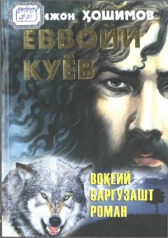

YKTabiat qoʻynida yashashga majbur boʻlgan ovchining hayoti haqidagi sarguzasht roman.
Mazkur asar sobiq Shoʻro davri qatagʻon siyosatining qurboni boʻlib, umrini tabiat qoʻynida oʻtkazishga majbur boʻlgan Mamajon ismli ovchining hayoti va taqdiriga bagʻishlangan. Real voqealarga asoslangan romanda bosh qahramonning turli mashaqqatlarni yengib, yashash uchun kurashi hamda sevgi va vataniga boʻlgan sadoqati hikoya qilinadi.